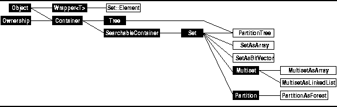
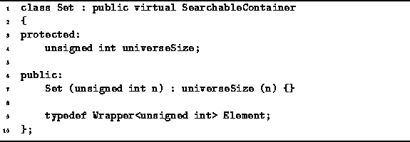

Data Structures and Algorithms
with Object-Oriented Design Patterns in C++
Data Structures and Algorithms
with Object-Oriented Design Patterns in C++

Figure: Object Class Hierarchy
As discussed above,
this chapter addresses the implementation of sets of integers.
A set is a collection of elements.
Naturally, we want to insert and withdraw objects from the collection
and to test whether a given object is a member of the collection.
Therefore, we consider sets as being derived
from the SearchableContainer class defined in Chapter  .
.
In general, a searchable container can hold arbitrary objects. However, in this chapter we will assume that the elements of a set are integers. Furthermore, all the searchable container implementations which we have seen so far have been based on two assumptions. These are that the container owns the objects it contains and that indirect storage is used, i.e., a pointer to the contained object is actually held by the container. Since we deal with integers and not with arbitrary objects, the set implementations in this chapter invalidate both these assumptions.
Program defines the abstract class Set.
The Set class is derived from SearchableContainer
which is defined in Section .
The definition does not declare any new member functions--the interface inherited from the base class is sufficient.
In addition,
a new type called Set::Element is defined.

Program: Set Class Definition
The items contained in a set are unsigned integers.
However, the member functions of the base class interface such
as Insert, IsMember, and Withdraw,
expect their arguments to be derived from the class Object.
Therefore, the Wrapper template (defined in Section )
is used to define the type Set::Element as the encapsulation of
an unsigned int.
We assume that the only Object instances
which are passed to a set are instances of the class Set::Element.
The default constructor for the Set class
is also given in Program .
It takes a single argument, ,
which specifies that the universal set shall be  .
.
 Copyright © 1997 by Bruno R. Preiss, P.Eng. All rights reserved.
Copyright © 1997 by Bruno R. Preiss, P.Eng. All rights reserved.